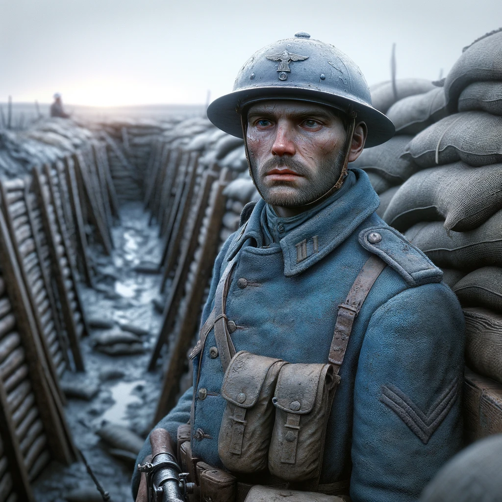
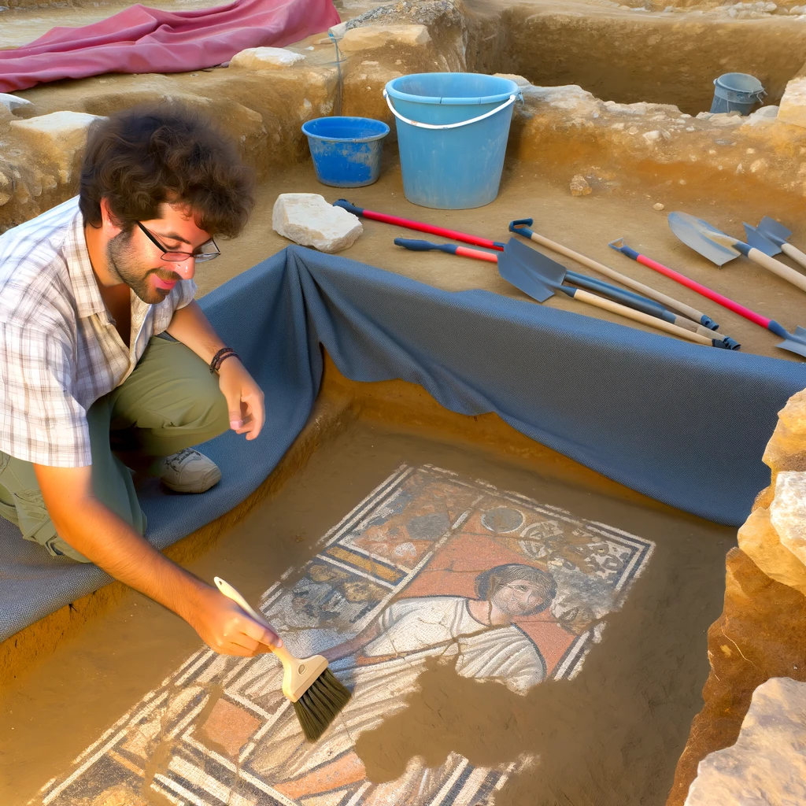

Les progrès récents en intelligence artificielle (IA) transforment le monde à une vitesse sans précédent. De la reconnaissance d'image avancée aux systèmes autonomes, l'IA est au cœur d'une révolution technologique. Dans cet article, nous explorons comment ces avancées façonnent notre avenir.
Reflets d'un matin alpin

Au cœur de cette toile vivante, les pins majestueux se dressent comme des sentinelles de verdure, leurs silhouettes sombres se détachant contre le ciel clair. L'air frais porte en lui le murmure des vagues douces caressant les berges, et le lointain appel d'un aigle résonne, vibrant comme une mélodie ancienne.
L'Écho des Tranchées

Dans l'aube naissante qui se fraie un chemin à travers le voile gris de la guerre, un soldat veille, immobile et résolu. L'horizon bleu de son uniforme se fond presque dans le paysage boueux des tranchées, témoignage silencieux de la bravoure et de l'endurance des hommes appelés à défendre leur patrie. Le casque Adrian, éraflé et couvert de la poussière des batailles, raconte des histoires de courage face à l'adversité insurmontable. Ce regard fixe, capturé à jamais dans le temps, parle de sacrifice, d'espoir et d'une détermination inébranlable. La Première Guerre mondiale nous a laissé d'innombrables récits de bravoure, mais c'est dans le silence de ces photos que l'on entend le mieux l'écho des combats et des vies forgées au front.
Sous nos pieds, les restes de l'Empire

L'histoire s'éveille sous le pinceau minutieux de l'archéologue, révélant les fragments colorés d'une mosaïque romaine que le temps avait enfouis. Dans un nuage de poussière et de terre, chaque coup de brosse est un pas en arrière dans l'histoire, un dialogue silencieux avec ceux qui nous ont précédés. Ce visage, immortalisé dans la pierre, nous fixe à travers les millénaires, un témoignage éternel des jours de gloire de Rome. C'est un moment de triomphe, non seulement pour l'archéologue dont les mains tremblantes ont dévoilé ce trésor, mais pour nous tous qui cherchons à comprendre notre passé pour construire notre avenir.
Au-Delà de la Défense
Dans le vif du jeu, sous les projecteurs éclatants de l'arène, un basketteur s'élève au-dessus du reste. Entouré de défenseurs, il s'envole, le ballon quittant ses doigts dans un mouvement presque chorégraphié, le silence se fait dans l'attente du tir à trois points. La foule retient son souffle, les défenseurs tendent leurs bras, mais l'inévitable est déjà en mouvement. Ce moment, capturé dans une fraction de seconde, représente bien plus qu'un simple point marqué; c'est la quintessence de la persévérance, de la précision et de la passion du basketball.